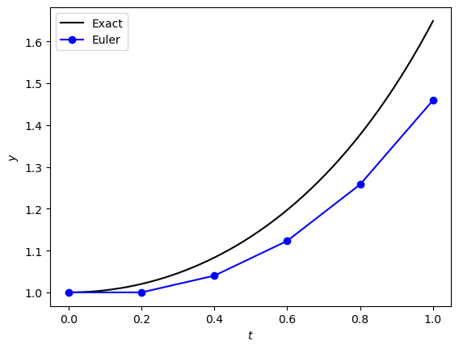
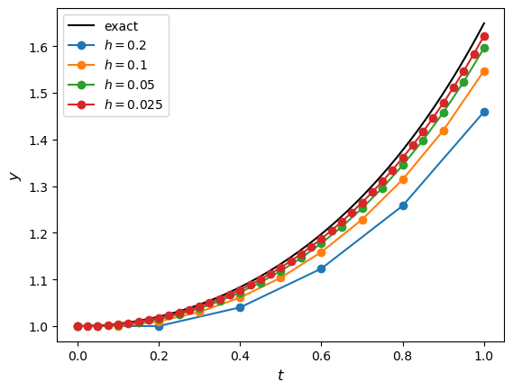
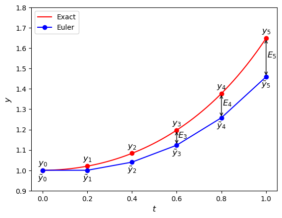

1.2. Error analysis#
In Example 1.1 in the previous section we solved the following IVP using the Euler method
This IVP is sufficiently simple that an exact analytical solution can be obtained
Since the exact solution is known, we can compare it directly with the numerical solution obtained using the Euler method. The absolute error of the numerical solution \(y_n\) compared to the exact solution \(y(t_n)\) is
At the final point \(t = 1\), the Euler method gives
whereas the exact solution is
The absolute error is therefore
The Euler method solution, the exact solution and the absolute errors are tabulated below, and the solutions plotted in Fig. 1.4.
\(t_n\) |
\(y_n\) |
\(y(t_n)\) |
\(| y(t)_n - y_n |\) |
|---|---|---|---|
0.0 |
1.000000 |
1.000000 |
0.000000 |
0.2 |
1.000000 |
1.020201 |
0.020201 |
0.4 |
1.040000 |
1.083287 |
0.043287 |
0.6 |
1.123200 |
1.197217 |
0.074017 |
0.8 |
1.257984 |
1.377128 |
0.119144 |
1.0 |
1.459261 |
1.648721 |
0.189460 |

Fig. 1.4 Comparisons between the Euler method solutions and the exact solutions for the IVP \(y'=ty\), \(t\in[0,1]\), \(y(0)=1\).#
It is clear that the Euler approximation becomes increasingly inaccurate as \(t\) increases. Each Euler step introduces a small error, and these errors accumulate as the solution progresses across the interval. Consequently, the discrepancy between the numerical and exact solutions grows with increasing \(t\).
1.2.1. Changing the step length#
One of the most important factors affecting the accuracy of a numerical method is the step length hhh. Intuitively, a smaller step length means that the numerical solution takes smaller steps along the solution curve and therefore follows the exact solution more closely.
To investigate the effect of the step length, we solve the IVP from Example 1.1 using several different values of \(h\) and compare the results with the exact solution.

Fig. 1.5 Solutions to the IVP \(y'=ty\), \(t \in [0,1]\), \(y(0)=1\) using the Euler method with step lengths \(h=0.2, 0.1, 0.05, 0.025\).#
Figure Fig. 1.5 shows that decreasing the step length causes the Euler approximation to follow the exact solution more closely. In particular, the discrepancy between the numerical and exact solutions becomes less pronounced as \(h\) decreases.
To quantify this behaviour, we compare the numerical approximation at the final point \(t = 1\) with the exact value \(y(1) = e^{1/2}\). The resulting absolute errors \(|y(1) - y_n|\) are shown in the table below.
\(h\) |
\(|y(1) - y_n|\) |
|---|---|
0.200 |
0.1895 |
0.100 |
0.1016 |
0.050 |
0.0528 |
0.025 |
0.0269 |
Notice that halving the step length approximately halves the error
More generally, if the error of a numerical method behaves like
where \(C\) is a constant independent of \(h\), then the method is said to have order \(p\). The numerical evidence above suggests that the Euler method has \(p = 1\).
1.2.2. Big-O notation#
We saw in the previous section that has the step length \(h\) decreases, the error tends to zero. Different numerical methods will converge to zero at different rates, and it is advantageous for us to use methods that converge raster so that we have more accurate solutions. Since in most cases we do not know the exact solution and therefore cannot calculate the errors, we compare the accuracy of different methods using the expected rate of convergence to zero depending on the step length \(h\), which is known as big-O notation.
Definition 1.4 (Big-O notation)
Let \(f(h)\) be a function. We say that
as \(h \to 0\) if there exists a positive constant \(C\) such that
for sufficiently small \(h\).
If \(f(h) = O(h^n)\), then for sufficiently small values of \(h\), the magnitude of \(f(h)\) is bounded by a constant multiple of \(h^n\). For example, if \(f(h) = O(h^n)\) then
so
So if \(n = 1\), halving the step length \(h\) reduces the error by a factor of \(\frac{1}{2^1} = \frac{1}{2}\), whereas if \(n = 2\), halving the step length reduces the error by a factor of \(\frac{1}{2^2} = \frac{1}{4}\). So the higher the power of \(h\) the quicker the function \(f(h)\) converges to zero as \(h\) decreases.
Definition 1.5 (Order of a method)
If the error of a numerical method satisfies
then the method is said to be a method of order \(p\).
In general, the higher the order of a method, the more accurate the solution will be when using the same step length \(h\).
1.2.3. Local truncation Error#
The local truncation error is the error introduced during a single step of the method, assuming that the solution at the beginning of the step is exact. In the derivation of the Euler method we made the assumption that the computed value of \(y_{n+1}\) is an approximation of the exact solution \(y(t_{n+1})\). The local truncation error \(e_{n+1}\) is the difference between \(y_{n+1}\) and \(y(t_{n+1})\)
Substituting the Euler method solution \(y_{n+1} = y_n + h f(t_n, y_n)\) gives
Since \(y(t_{n+1}) = y(t_n + h)\), we can expand \(y(t_{n+1})\) about \(t_n\) using the Taylor series with remainder
where \(\tilde{t_n}\) is some point between \(t_{n}\) and \(t_{n} + h\). Since \(y'(t_n) = f(t_n, y_n)\), substituting equation (1.4) into equation (1.3) gives
So the local truncation error for the Euler method is proportional to \(h^2\). The actual value of the local truncation error is dependent on the value of \(y''(\tilde{t_n})\) so will change depending on the solution to the ODE and the value of \(t\). Assuming that the solution is sufficiently smooht, there exists a constant \(M\) such that
throughout the interval. The local truncation error is then
1.2.4. Global truncation error#
The global truncation error at \(t_n\) is
the difference between the exact and numerical solutions at the point \(t_n\). \(E_n\) is the accumulation of the local truncation errors \(e_n\) for the steps of the method to compute that solution from \(t=t_0\) up to \(t = t_n\). This is illustrated in (Fig. 1.6) for the Euler method solution to \(y' = ty\).

Fig. 1.6 The global truncation errors \(E_n\) for the Euler method solution to the IVP \(y' = ty\), \(t\in [0, 1]\), \(y(0)= 1\) using a step length of \(h = 0.2\).#
We saw that the local truncation error at each step of the Euler method is at most \(\dfrac{Mh^2}{2}\), then after \(n\) steps, the upper bound of the global truncation error is at most \(\dfrac{nMh^2}{2}\). Using a constant step length \(h\) then
so the upper bound of the global truncation error is
If \(C = (t_n - t_0 ) M / 2\) is some positive constant then \(E_n \leq C h\). Therefore the Euler method is a first-order method, since its global truncation error satisfies
This explains the behaviour shown in Table 1.1 where halving the step length approximately halves the global error. Such behaviour is characteristic of a first-order method.